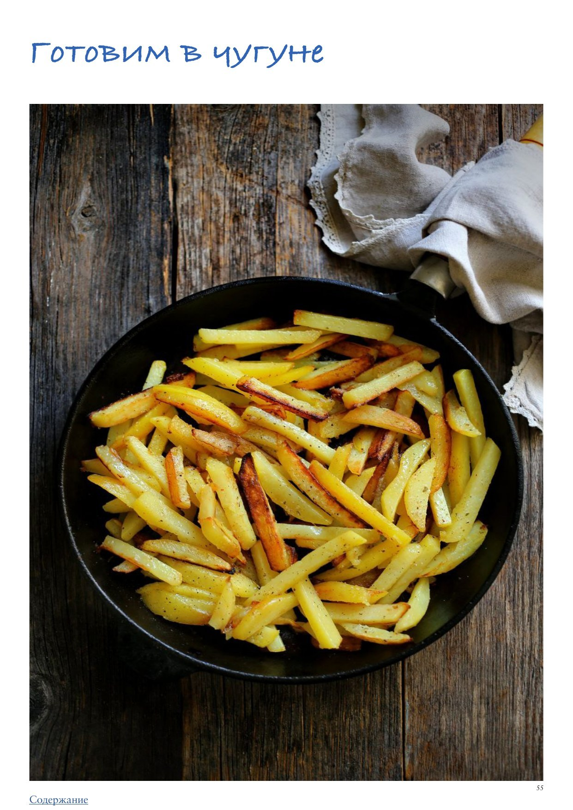

Я уверена, что чугунная посуда на кухне просто необходима. Чугун — прекрасный материал, ведь он отличается отличной теплоемкостью, проще говоря, уверенно держит и распределяет тепло, а потому, например, дает румяную корочку, когда вы на нем жарите, или позволяет блюду равномерно тушиться или запекаться, без перепадов температуры, которые бывают в некоторых духовках (чугун прекрасен тем, что его можно смело ставить в духовку, он максимально жаростоек). Также чугун невероятно долговечен. Если сковородка с тефлоновым покрытием служит всего около года, а то и меньше, при активном использовании, а керамическая лишь ненамного дольше, то чугунная будет служить вам, а потом и вашим детям, без потери качества десятилетиями. Сковородка из чугуна тяжелая, но не настолько, чтобы среднестатистический человек не мог поставить ее на плиту или переставить с плиты в духовку (для переворачивания ингредиентов в воздухе чугун не предназначен). Кроме того, чугун экологичен и безвреден для здоровья. Это главные его достоинства.
Но, как обычно в жизни, достоинств не бывает без недостатков. Какие же недостатки у чугуна?
Но сразу оговорюсь: почти все эти минусы (кроме последних двух) касаются только чугуна БЕЗ покрытия.
Не случайно первый пункт списка недостатков гласит, что это НЕ АНТИПРИГАРНЫЙ материал. Когда вы покупаете дорогущую чугунную сковородку, пробуете на ней жарить, как на привычной тефлоновой, и у вас все пригорает, вы возмущаетесь: как же так, столь дорогая штука, и при этом такой облом! Но давайте не будем возмущаться и далее разберемся, в чем здесь дело.
Чугунная посуда бывает двух типов: с эмалевым покрытием и без него. Посуда с покрытием почти идеальна: эмаль не дает чугуну ржаветь и реагировать на кислоту, ее легко мыть, даже в посудомойке, и готовить в такой посуде можно практически все что угодно. А тяжесть и медленное прогревание с лихвой компенсирует отменный результат.
Почему «почти» идеальна? Потому что у эмали нет свойств антипригарного покрытия. Производитель вам этого нигде не обещал. Она дорогая, потому что качественная, потому что брендовая, потому что красивая, потому что дает отличное качество приготовления, потому что прослужит 50 лет.
Меня часто спрашивают, как пожарить яйца на чугуне. Я не очень понимаю, зачем. Ведь приготовить яичницу гораздо удобнее на качественной сковородке с тяжелым дном с антипригарным покрытием. В принципе, жарить яичницу можно и на чугуне, только с «наработанным» слоем, потому что даже отличные по качеству чугунные сковородки Staub и Le Creuset с эмалированным покрытием не являются антипригарными, эмаль играет лишь защитную роль, ограждая чугун от ржавчины и кислоты. Если вам очень хочется пожарить яичницу на чугуне с эмалью, это сделать можно, но потребуется правильно и сильно прогреть сковородку, а также использовать довольно много масла, но остается вопрос рациональности — зачем?
В случае же с чугунной посудой без покрытия требуется «нарастить», наработать особый слой, который будет выступать как своеобразная альтернатива антипригарному покрытию. И сделать такой слой в принципе несложно:
1. Новую сковородку нужно тщательно вымыть. Водой, неагрессивным моющим средством с губкой. Далее сковородку требуется тщательно высушить. Не просто вытереть насухо (насухо не получится, потому что поверхность чугуна шероховатая, пористая, и все равно капельки останутся внутри этих микропор), а поставить на плиту и прогреть хорошенько, чтобы вся вода испарилась.
2. Вот теперь можно приступать к созданию защитного слоя, который по своей сути — полимерная пленка, образующаяся в результате реакции горячего металла с горячим жиром. Для этого сухую сковородку необходимо со всех сторон смазать тонким слоем нейтрального растительного масла, например, рапсового, соевого, кукурузного, льняного, рафинированного подсолнечного (внутри, снаружи и ручку, если она тоже чугунная), бумажным полотенцем тщательно убрать все излишки масла и поставить сковородку в духовку, разогретую до 230 °С, на 30 минут. Духовка предпочтительнее плиты, так как дает более равномерный нагрев. Будьте готовы к тому, что масло начнет дымить, это нормально. Просто проветрите кухню и включите вытяжку. Данную процедуру нужно повторить три-четыре раза подряд и дать сковородке полностью остыть. Поздравляю, ваша сковородка готова к использованию!
Чем больше, дольше и активнее вы пользуетесь чугунной посудой, тем лучше она становится. При каждом использовании, готовя в ней что-то с использованием жира, вы создаете новый слой защитного покрытия, которое со временем станет настолько толстым и надежным, что даже на ощупь будет гладким и приобретет антипригарные свойства.
Главный враг чугуна — влага, поэтому после каждого мытья посуду из него нужно очень тщательно высушивать, лучше всего нагревая на плите. А также восстанавливать защитную полимерную пленку, для чего в горячем виде протирать ее маслом, тщательно убирая все остатки.
Мыть сковородку следует бережно, не использовать агрессивные средства и не стараться тщательно отмыть от жира.
На современном рынке, бесспорно, лидируют уже упомянутые выше марки Staub и Le Creuset, которыми пользуются и домашние, и профессиональные кулинары. Но это недешевое удовольствие. И еще, странно, но факт, у Staub сковородки обычно с деревянными ручками, поэтому их нельзя ставить в духовку.
Можно искать более дешевые альтернативы, например американского бренда Lodge. В российских интернет-магазинах есть более доступные по цене варианты немецких брендов Otto Schroeder и BergHoff или испанского бренда Guison, но гарантировать качество здесь я не берусь.
Если вы все-таки решите сэкономить и купить чугунную посуду без покрытия, чтобы «нарастить» его самостоятельно, рекомендую выбрать белорусского или российского производства, где качество металла более достойно доверия, а не китайского, и внимательно читать отзывы (не обращая внимания на панические «У меня пригорает!», вы это и сами поймете, когда дочитаете эту статью).
Иногда вроде все делается правильно, и у чугунной сковородки есть «защитный слой», но все равно пригорает. Почему?
— У меня готовка на шесть человек, как купить чугун для супа, так чтобы это было подъемно? Смущают вес и цена.
Я не вижу большого смысла варить суп именно в чугуне. Можно, но не обязательно, я предпочитаю для супа кастрюлю из трехслойной нержавеющей стали. Она практичнее, легче, можно хранить суп в холодильнике прямо в ней, что невозможно в чугуне. Обратите внимание: в статье как раз пишется, что чугунная посуда не является универсальной, для всего.
— У меня сковорода-сотейник «Биол». С жаркой яичницы-блинов вроде приспособилась, но делать в ней плов или тушить капусту не могу — еда становится черного цвета и пахнет металлом. Тушить нельзя?
У меня нет опыта работы с такой посудой. Подозреваю, что она не очень качественная, и при жарке на ней образуется нагар, который отходит, когда соприкасается с горячей жидкостью. Если хотите тушить без проблем, я бы посмотрела в сторону эмалированного чугуна.
— Хочу узнать, как определить по диаметру сковороды, сколько яиц можно жарить, чтобы не перегружать?
Я жарю 4 небольших яйца на сковородке диаметром 24–28 см. Но тут все зависит от ваших целей: нужны ли вам отдельные глазуньи, используете ли вы какие-то начинки.
— К моей сковороде не шла крышка в комплекте. Пользуюсь крышкой АxWild. Что делать, если по рецепту в духовке нужна крышка, закрывать фольгой или пергаментом?
Повторюсь, я бы рекомендовала не экономить и потратиться на высококачественную чугунную посуду с эмалью и подходящей к ней плотной тяжелой крышкой, потому что при запекании корнеплодов или чего угодно другого в духовке под такой крышкой получается идеальный эффект теплоизоляции, которого не добиться с помощью фольги или пергамента. К тому же считается, что фольга небезопасна, так как алюминий может частично попадать в пищу.
— Я жду статью, чтобы заказать кастрюлю или сотейник, которые можно в духовку ставить.
Всю посуду Le Creuset и Staub можно ставить в духовку, если только у нее не деревянные ручки. Чугунная посуда с крышками разработана именно для того, чтобы в ней можно было готовить и на плите, и в духовке.
— Еще есть сковорода чугунная Le Creuset с покрытием, но почти на ней не готовлю — дюже долго греется и ограничения типа нельзя помидоры и томатную пасту смущают.
Очень странная ситуация. Чугунная посуда греется, конечно, не как алюминий или нержавейка, но все же не столь уж долго. Нужно разбираться с вашей плитой. У сковородок Le Creuset с эмалевым покрытием нет никаких ограничений, можно использовать помидоры и томатную пасту.
— Для чего, кроме хлеба, мне может быть нужна чугунная кастрюля?
Вообще, выпекание хлеба в чугунной кастрюле — далеко не первое, что приходит в голову, хотя хлеб в ней и получается отличным. Прежде всего, чугунная кастрюля нужна для приготовления различных рагу и тушеных блюд.
— У меня есть дешевый чугун с Амазона, так в нем нельзя ничего варить и тушить, только запекать. При попадании жидкости внутрь сразу изменение цвета продуктов.
И вновь советую вам обратить внимание на эмалированный чугун, с которым таких проблем не бывает. К сожалению, дешевый чугун без покрытия может вести себя непредсказуемо.
— Сильно оттирать — смывается патина, если просто споласкивать, на пище (например, яичница) видны приставшие черные частицы нагара, что, вероятно, вредно. Как быть? Как мыть?
В статье мы подробно рассказали, как ухаживать за чугуном. Если вы правильно обработаете чугунную сковородку (создадите защитный слой) и будете бережно ее мыть, нагара быть не должно. Если он все-таки появляется, боюсь, нужно будет сковородку заново подготавливать. Также подумайте о регулировке огня, возможно, он слишком сильный.
— Я пытаюсь понять, есть ли разница между чугуном за 200 евро и за 40?
Безусловно, в качестве и в удобстве использования. Качественная посуда с покрытием просто не может стоить 40 евро. Если вы такую нашли, это подделка, и вы наверняка столкнетесь с проблемами при ее использовании, например, покрытие быстро придет в негодность.
— Здравствуйте! У меня вопрос: мои родственники без моего ведома помыли новую чугунную сковороду в посудомойке, и она стала ржавого цвета, можно ли ею пользоваться или только выкинуть?
Ею пользоваться можно, в статье вы найдете информацию, как снова вернуть ее к жизни. Кстати, сама этот лайфхак не использовала, но видела достойное доверия видео, на котором заржавевшую чугунную сковородку прокалили на открытом огне (костре) сильно, почти докрасна, затем медленно остудили, и она стала как новенькая, вся ржавчина выгорела.
— Купила чугунную сковороду гриль Le Creuset. Как ее чистить? Все эти ребрышки... тот еще экзерсиз, не сравнить с гладкой поверхностью. Может, есть лайфхаки?
Мой лайфхак №1 в данном случае — не покупать сковородку гриль. :) Я не люблю сковородки гриль, считаю их чисто маркетинговой уловкой. Для меня гриль — это исключительно про угли и решетку. По сути, кроме рисунка в виде полосок, эта сковородка при жарке ничего не дает, и вы правы, уход за ней — та еще головоломка. Что все-таки можно сделать, чтобы было проще ее очистить, это залить водой, добавить пищевую соду (пару чайных ложек), немного моющего средства и «варить» все это часа полтора, регулярно подливая воду, так как она будет испаряться. Это позволит отчистить сковородку.
Но впредь рекомендую не жарить на ней мясо, только овощи, такие как цукини, кабачки или спаржа. Или использовать ее (если ручка позволяет) вместо формы с решеткой для запекания в духовке курицы, чтобы жир и соки стекали вниз, позволяя образоваться румяной корочке.
— У меня такой вопрос, существует ли сковорода, например, к которой не пригорает, и ее можно мыть в посудомойке? У меня небольшая кухня, хочется универсальной качественной красивой посуды для приготовления. Чугун из-за теплоемкости нравится, но много «но». Сталь тоже с нюансами. От антипригарного покрытия хочу избавиться навсегда и научиться готовить без него. И на каких жирах жарить, тоже вопрос открытый.
Здесь сразу целый блок вопросов, и ответы на них превратились бы в отдельную статью, а то и не одну. Часть ответов вы найдете в том материале, который мы дали в клубе в этом месяце. Кроме того, сейчас мы готовим новый курс «ПРАвильная кухня», там все это обязательно будет объясняться в подробностях, а для участниц клуба, разумеется, будет специальная цена.
— У меня нет сковородок (пока) для регулярного использования (яичница, мясо, блины), хочу понять, готова ли я переходить на чугун и, если шанс есть, как это сделать с минимумом головняка и максимумом эффекта и радости.
Думаю, из статьи и из предыдущих ответов на вопросы вы можете уже сделать для себя выводы. Надеемся, в пользу качественного чугуна.
— У меня три кастрюли Staub, проблема с ними только одна — после мытья остается белый налет, который никак не убрать, помогает только спецсредство от Le Creuset. Есть ли какие-то способы отмыть эти белые разводы?
Многие жалуются на белые разводы, но я не могу понять, чем они вам мешают? Скорее всего, появляются они из-за жесткой воды, но, кроме эстетического эффекта, в них нет ничего страшного. На моей посуде они тоже присутствуют, и я не парюсь — ну, есть и есть.
— Как отмыть от бурых разводов эмалированный чугун?
Скорее всего, вы имеете в виду ржавчину. Смотрите предыдущие ответы на вопросы, мы рассказывали, как от нее избавляться.
— У меня две чугунные кастрюльки от Le Creuset с белым эмалированным покрытием. Нормально, что в них только тушить-запекать можно? Поджарить ничего не могу толком.
В принципе, кастрюли и не предназначены для жарки. Но вы можете обжарить в такой кастрюле мясо перед тушением, потому что так оно получится более вкусным. Хотя в принципе, если продукты на чугуне не жарятся, это значит, что вы недостаточно разогреваете посуду и/или используете мало жира. Вернитесь еще раз к статье, там вы найдете ответ на свой вопрос.
— Еще вопрос: еду в чугуне хранить нельзя. А насколько быстро после окончания приготовления нужно вытаскивать еду и мыть кастрюлю? Она может хотя бы остыть с едой внутри?
Слухи о том, что еду в чугуне хранить нельзя, сильно преувеличены, особенно если речь идет об эмалированной посуде. Конечно, не нужно спешить все сразу перекладывать, можно спокойно дождаться, пока еда остынет, более того, можно хранить ее в чугуне весь день, если вы планируете ее всю съесть. В принципе, я не вижу причин, почему нельзя хранить в холодильнике еду в посуде Le Creuset и Staub (хотя производители и не рекомендуют). Я храню. Скорее всего, рекомендации родились потому, что посуда тяжелая и способна сломать под своим весом вместе с содержимым полку холодильника.
— Есть сковорода Staub, неглубокая с двумя ручками, с эмалью. Эмаль слезает в некоторых местах, но еда не пригорает. Не опасно готовить на ней? И вообще, что на такой готовить хорошо? Я котлеты жарю, а потом в духовку их и гренки, но может, есть что-то еще из блюд, для чего такая предназначена?
Если эмаль слегка слезает, в принципе, ничего страшного. Вопрос в другом: не излишний ли у вас нагрев, потому что так быть не должно. Сам же чугун под эмалью безвреден, мало того, даже, говорят, полезен, так как из него в наш организм поступает железо, которого обычно нам не хватает. Но есть риск, что оголенные участки чугуна могут начать ржаветь. А вот ржавчина — это уже точно не полезно, поэтому нужно следить за состоянием чугуна.
Что готовить на такой сковородке? Жарить мясо и картошку, печь пироги и галеты — об этом подробнее говорится в статье.
— А что можно готовить в чугуне, борщ можно в ней готовить? Это целесообразно? А потом можно ее в холодильник ставить (очень тяжелая)?
Мы уже отвечали на эти вопросы, но вкратце: борщ можно (в эмалированной посуде). Если нет другого варианта кастрюли — целесообразно; если есть хорошая толстостенная кастрюля из нержавейки, специально покупать вряд ли стоит. Тяжелую посуду потенциально рискованно ставить на хрупкие полки холодильника.
— Пригорает к нему все. И в кастрюле, и на сковороде, и в сотейнике.
Повторим то, что уже не раз озвучивали: либо вы недостаточно греете посуду, либо используете мало жира. Третьего не дано.
— Можно ли делать солянку из кислой капусты в чугуне, тушить помидоры, и можно ли все это хранить в чугуне без боязни окисления продукта?
Если это эмалированный чугун, в нем можно готовить абсолютно все. Если чугун без покрытия, в нем нельзя готовить любые продукты с кислотой, иначе он будет ржаветь.